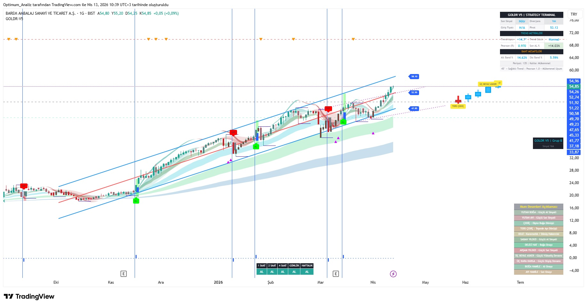
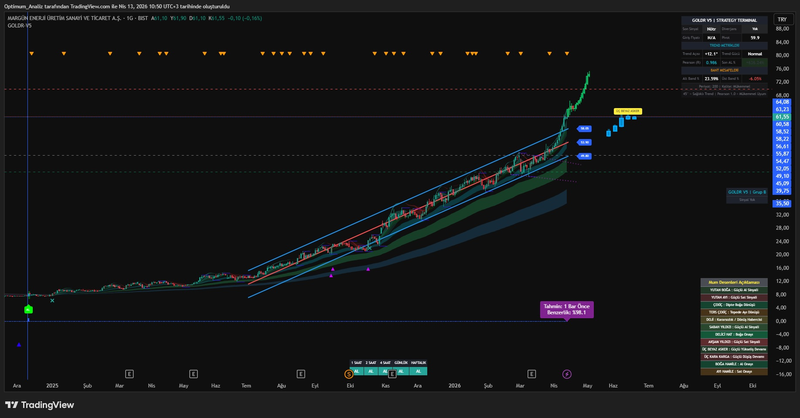

🔸 GOLDR Ghost AI - Tahmin simülasyonu (geçmiş patern tahmini)
🔸 Profesyonel gerçek zamanlı terminal paneli
🔸 200 Tarama desteği - Ayrıca sistem içinde 30 adet kanal dip taraması
🔸 High - Low Çizgileri
🔸 Kanal Dip Okları ile Risk alınabilir sinyali
🔸 Grafik üstündeki oklar ile kar satış teşvik sinyalleri
Sistem Nasıl Çalışır?
1. Regresyon Kanalı & Pearson Korelasyonu
Sistem en güçlü korelasyona sahip periyodu otomatik seçer. Pearson R değeri:
0.90+ → Mükemmel Güvenilirlik
0.80 – 0.89 → Güçlü Kanal
0.80 altı → Zayıf sinyal
2. Trend Açısı Ölçümü
Trend açısı 45° üzeri “Süper Güçlü”, 25°-45° arası “Güçlü” olarak sınıflandırılır.
3. Sinyal Üretimi
AL-SAT kombinasyonu + Mum formasyonu filtreleri ile kaliteli sinyaller üretilir.
GOLDR Sistem’in Güçlü Yönleri:
• Yüksek Pearson değeri = Daha güvenilir kanal
• Trend açısı + Mum formasyonu kombinasyonu
• Ghost AI ile gelecek tahmini
• Gerçek zamanlı profesyonel panel
Kullanım Önerileri
En iyi performans 4H ve Günlük grafikte alınır.
Pearson R değeri minimum 0.80 olan varlıklarda kullanın.
AL sinyallerinde SAT beklenmeyecek ise stop-loss kullanılması önerilir.
GOLDR Sistem Örneği

GOLDR Sistem - Dinamik Regresyon Kanalı, Pearson Korelasyonu ve AL/SAT Sinyalleri
GOLDR Sinyal ve Trend Açısı Örneği

GOLDR Sistem - Trend Açısı, Mum Formasyonu ve Güçlü AL Sinyali Örneği
Erişim Bilgisi
Bu indikatör invite-only olarak TradingView’de yayınlanmaktadır.